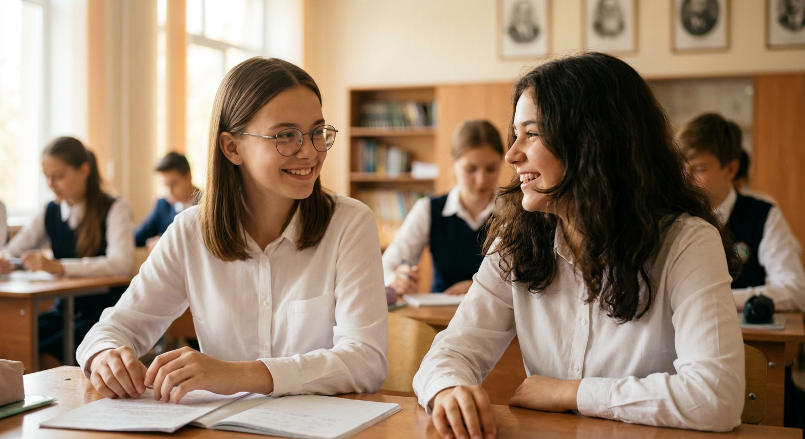
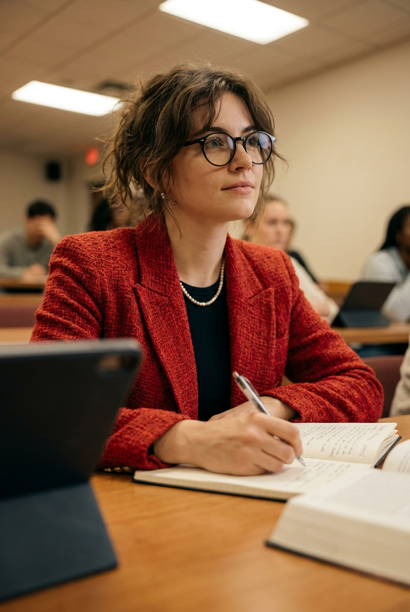
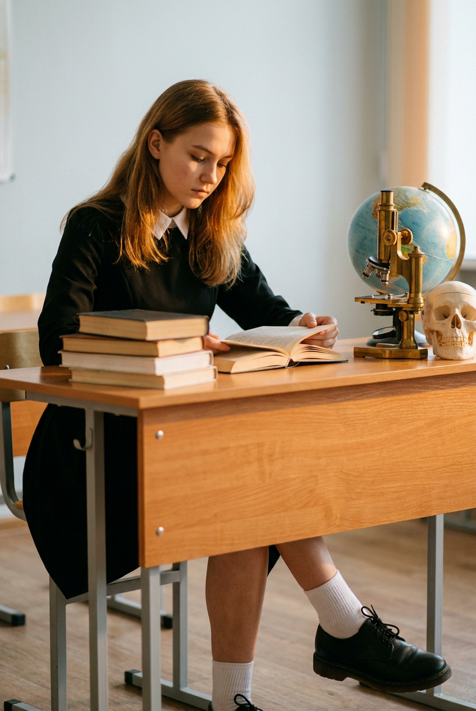
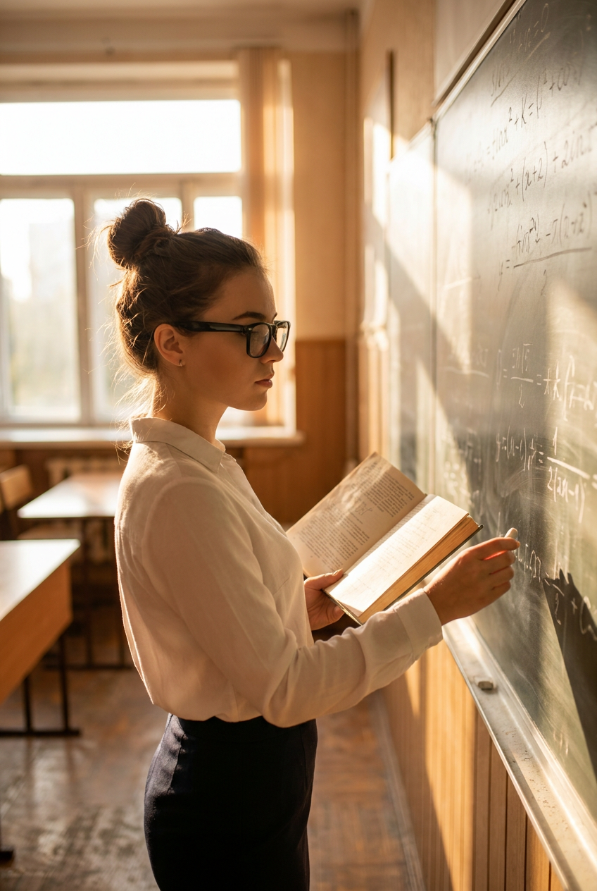
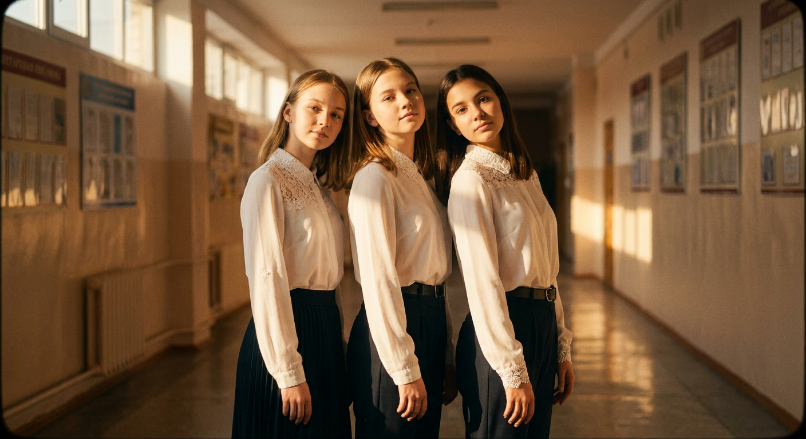
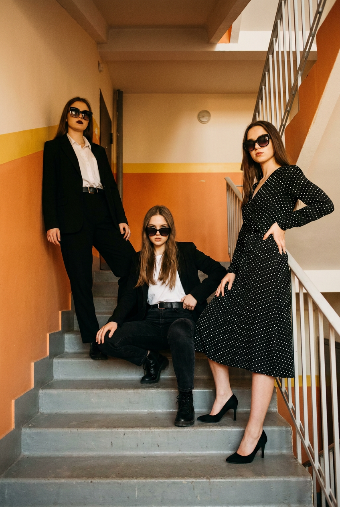
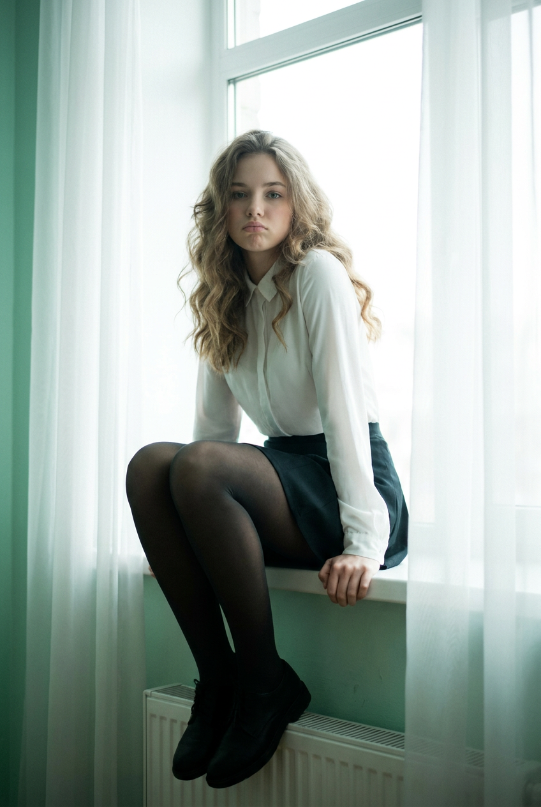
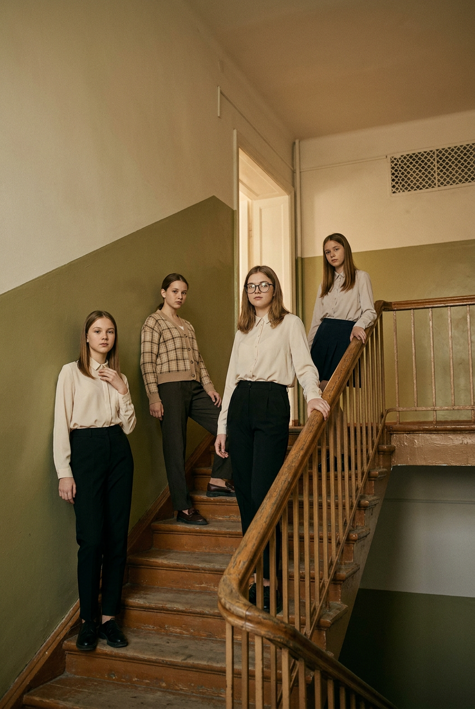
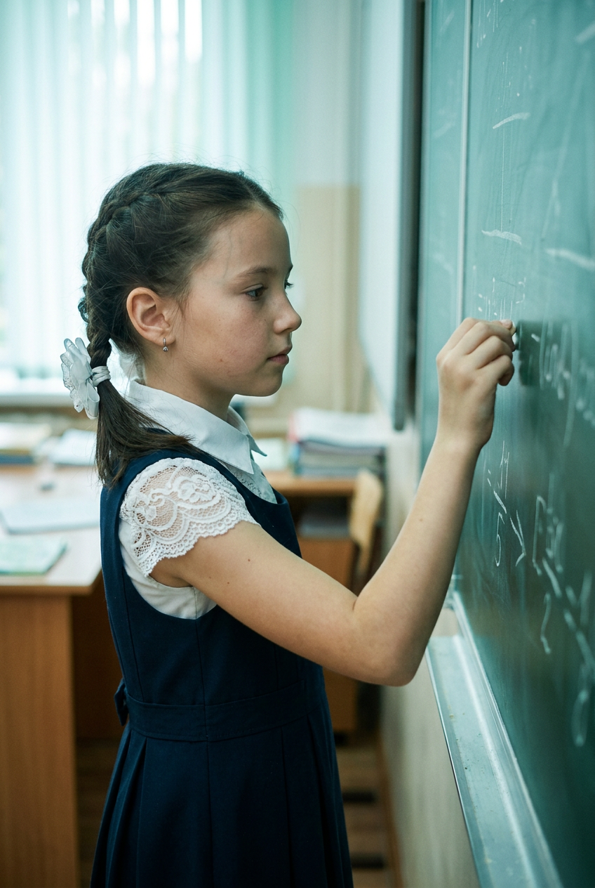
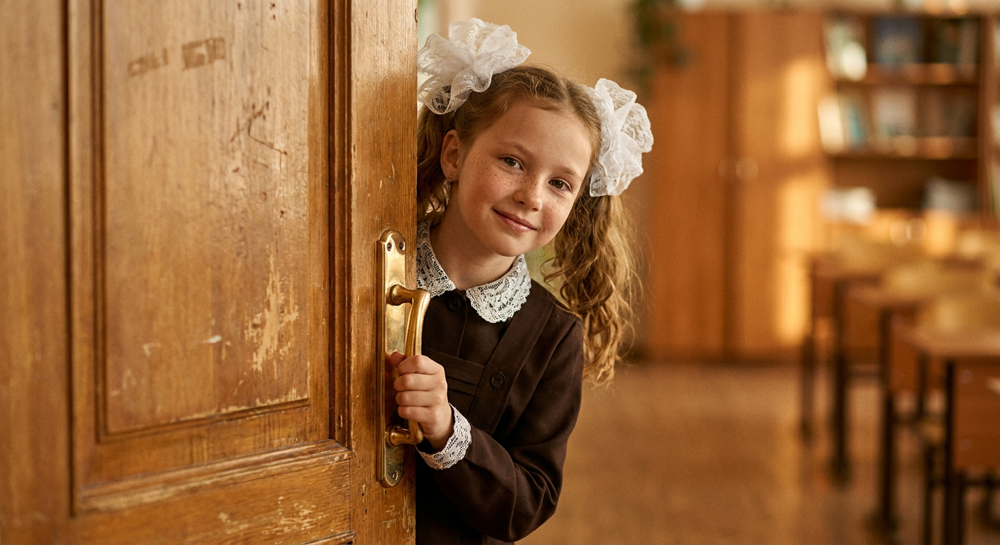

Школьная ИИ-фотосессия: 10 промптов для нейросети

Школьный кадр легко превращается в случайный набор парт, лиц и рук: нейросеть путает перспективу, дорисовывает пальцы и теряет детали формы. Готовый промпт помогает заранее задать сцену, позу, свет и настроение, чтобы получить цельную фотографию.
В подборке — десять сценариев для школьной ИИ-фотосессии: разговор за партой, урок у доски, портреты в коридоре, съёмка на лестнице, мягкий контровой свет и ретро-кадры с детьми. Каждый текст можно использовать как основу и адаптировать под нужный генератор.
Как сгенерировать такое фото: пошагово
Нужен снимок анфас при ровном свете, лицо в кадре целиком, без тёмных очков и головных уборов. Разрешение от 1000 пикселей по короткой стороне. Чем чётче исходник, тем точнее модель повторит черты.
Выберите сценарий ниже и нажмите «Копировать» — текст уйдёт в буфер целиком, вместе с командой сохранения внешности. Эта команда стоит первой строкой и отвечает за то, чтобы на выходе было ваше лицо, а не случайное.
Кнопка «Сгенерировать» рядом с каждым промптом открывает модель в новой вкладке. Nano Banana Pro работает с референсом лица — в отличие от моделей, которые генерируют портрет с нуля и узнаваемость теряют.
Промпт — в поле ввода, портрет — через загрузку референса. Порядок значения не имеет, но без референса команда сохранения внешности работать не будет: модели нечего сохранять.
Для сторис и ленты берите 9:16, для превью и обложек — 4:3. Первый результат редко идеален: если поза или свет ушли не туда, поправьте соответствующую часть промпта и запустите заново. Обычно хватает двух-трёх итераций.
10 промптов для генерации
1. Разговор за первой партой
Строго сохранить внешность по загруженному референсу: черты лица, пропорции, мимику и текстуру кожи без изменений. Фотореалистичная кинематографичная сцена в школьном классе, средний план, камера на уровне парт и немного смещена вправо, объектив 50 мм, малая глубина резкости. На переднем плане две старшеклассницы 17–18 лет сидят за партой, разговаривают и смеются; лица, руки и край столешницы резкие, дальний класс уходит в мягкое боке. Девушка слева сидит ближе к камере, корпус слегка повернут вправо, гладкие волосы с центральным или немного боковым пробором лежат на плечах, на ней тонкие очки с естественными бликами и белая матовая рубашка с аккуратным воротником и реалистичными складками. Её руки спокойно лежат на тетради и листах. Девушка справа с волнистыми объёмными волосами смотрит на подругу и улыбается; на ней такая же белая блузка. Естественная анатомия пальцев, реалистичная кожа, живые эмоции, мягкий дневной свет, без лишних надписей и логотипов.
2. Мысли над тетрадью

Строго сохранить внешность по загруженному референсу: черты лица, пропорции, мимику и текстуру кожи без изменений. Кинематографичный фотореалистичный кадр в учебной аудитории. Молодая женщина 25–35 лет сидит за школьной партой и пишет правой рукой в тетради, ручка касается страницы. Камера установлена сбоку и чуть ниже уровня лица, объектив около 85 мм, передний план частично перекрывают размытые планшет, блокнот или край другой тетради, создавая эффект съёмки через предмет. Корпус героини выпрямлен и немного развернут вправо, лицо показано в три четверти. Взгляд направлен вверх и влево, будто она слушает объяснение или обдумывает ответ; выражение спокойное и сосредоточенное, губы слегка приоткрыты или образуют едва заметную полуулыбку. Объёмная укладка, локоны обрамляют лицо, крупные круглые или овальные очки в тёмной оправе отражают мягкий свет. На шее небольшое жемчужное ожерелье и тонкая цепочка, без других украшений. Натуральные текстуры кожи, бумаги и ткани, фон слегка размыт.
3. Книга в тёплом свете

Строго сохранить внешность по загруженному референсу: черты лица, пропорции, мимику и текстуру кожи без изменений. Вертикальный фотореалистичный студийный кадр в школьном классе с тёплым янтарным светом golden hour, мягкими тенями и лёгким плёночным зерном. Камера находится ниже лица и немного выше уровня колен, угол съёмки примерно 30–45 градусов, объектив 50 мм без эффекта рыбьего глаза. В центре — школьница 16–18 лет, средний план с видимыми лицом, позой, ногами и партой; задний план плавно размывается. У девушки волосы с центральным пробором и аккуратной укладкой, лицо слегка наклонено к раскрытой книге, выражение спокойное и сосредоточенное. Она сидит на деревянной парте, корпус чуть подан вперёд, книгу держит обеими руками. Колени согнуты, одна нога слегка перекрещена с другой; видны белые носки и чёрные кожаные полуботинки. Реалистичные складки одежды, натуральная кожа, чёткая фактура дерева, мягкое свечение по краям силуэта, достоверная перспектива.
4. Урок у меловой доски

Строго сохранить внешность по загруженному референсу: черты лица, пропорции, мимику и текстуру кожи без изменений. Фотореалистичный кинематографичный кадр в настоящем учебном классе. Молодая преподавательница стоит у большой меловой доски, показана в левом профиле и развороте три четверти, смотрит на запись и переносит мелом пример из раскрытой книги. На ней белая рубашка с длинными рукавами и тёмная юбка; волосы собраны в пучок, несколько прядей выбились от движения. Тёмная очковая оправа подчёркивает сосредоточенное выражение лица. Справа занимает большую часть композиции доска с аккуратными математическими формулами и строками текста, часть записей уходит в мягкое размытие перспективы. Слева через высокие окна проходит тёплый боковой свет golden hour, создающий золотой контур на волосах и ткани. В глубине видны учебные столы, светлые деревянные стены и умеренный беспорядок реального кабинета. Объектив 50 мм, малая глубина резкости, натуральные цвета, лёгкое плёночное зерно.
5. Три лица в коридоре

Строго сохранить внешность по загруженному референсу: черты лица, пропорции, мимику и текстуру кожи без изменений. Вертикальный фотореалистичный групповой портрет в длинном школьном коридоре, который уходит вдаль. Золотой солнечный свет проходит по стенам и полу, объектив 50 мм, естественная перспектива, фон постепенно смягчается. На переднем плане три школьницы 14–17 лет стоят близко друг к другу плечом к плечу и выстроены по диагонали относительно камеры. Все смотрят в объектив, головы слегка наклонены, выражения спокойные и уверенные. У первой девушки слева волосы с центральным или боковым пробором, у второй волосы средней длины, у третьей тёмные волосы; причёски прямые или слегка волнистые, пряди лежат на плечах. На всех белые рубашки с длинными рукавами, мягкой фактурой и кружевными или вышитыми деталями на воротниках и манжетах. Тёмный низ — юбки или брюки, аккуратные складки, у некоторых заметны пояса или ремни. Руки опущены либо немного согнуты, пальцы анатомически корректны, без логотипов и лишних предметов.
6. Модная школьная лестница

Строго сохранить внешность по загруженному референсу: черты лица, пропорции, мимику и текстуру кожи без изменений. Фотореалистичный fashion-editorial кадр с лёгким глянцевым кинематографичным эффектом и тонким плёночным зерном. Вертикальная композиция на закрытой лестничной площадке: серые бетонные ступени ведут вверх, по краям проходят оранжевые стены и канты, на стене заметна жёлтая полоса, справа стоят белые металлические перила и стойки. Три молодые женщины расположены на ступенях в тесной, но естественной композиции. Слева, выше остальных, уверенно стоит девушка с аккуратной укладкой и пробором ближе к центру; крупные тёмные солнцезащитные очки закрывают верхнюю часть лица. На ней чёрный костюм с жакетом и брюками, белая рубашка и заметный ремень, одна рука свободно опущена, корпус слегка повернут к центру. Две другие героини находятся ниже и ближе к середине лестницы, позы расслабленные, взгляд направлен к камере. Реалистичные текстуры бетона, ткани и металла, сдержанная цветокоррекция, фон не отвлекает от персонажей.
7. Силуэт у большого окна

Строго сохранить внешность по загруженному референсу: черты лица, пропорции, мимику и текстуру кожи без изменений. Вертикальный фотореалистичный кадр с эффектом high-key и мягкой переэкспонированной плёнки. Молодая школьница сидит на широком подоконнике в комнате с большим окном; за спиной яркий дневной свет, лёгкая засветка, bloom и воздушная туманная атмосфера, но лицо и силуэт остаются узнаваемыми. В кадре виден полный рост, камера расположена немного сбоку на уровне глаз, объектив 50 мм. Девушка смотрит в объектив, выражение задумчивое, губы слегка надуты или образуют нейтральную полуулыбку. Светлая кожа и мягкие черты лица переданы естественно. Объёмные волнистые волосы с пробором ближе к центру лежат на плечах. Она сидит боком, колени согнуты, корпус немного развёрнут к камере, обе руки упираются в подоконник. Одежда модная, но полностью скромная и закрытая, без откровенных деталей и логотипов. Корректная анатомия кистей, реалистичная ткань, мягкие контуры, светлая цветовая палитра.
8. Лестница с четырьмя героинями

Строго сохранить внешность по загруженному референсу: черты лица, пропорции, мимику и текстуру кожи без изменений. Фотореалистичный групповой fashion-editorial портрет внутри школьного здания. Камера установлена внизу лестницы и смотрит вверх, объектив 35 мм, диагональ деревянных ступеней и перил проходит через весь вертикальный кадр. Четыре школьницы 17–18 лет стоят или полуразворачиваются вдоль подъёма, лица спокойные, немного задумчивые, взгляд направлен к камере или вдоль лестницы. В переднем левом плане девушка с ровными волосами и центральным или боковым пробором одета в молочную рубашку с длинным рукавом и чёрные брюки; одна рука лежит у груди, корпус повернут вправо. Позади слева другая героиня в бежево-коричневом клетчатом кардигане или пиджаке и тёмных брюках слегка развёрнута вперёд. Ещё две девушки располагаются выше по ступеням, не перекрывая лица друг друга, в светлых рубашках и тёмной школьной одежде. Мягкий рассеянный свет, натуральные фактуры дерева и ткани, аккуратная перспектива, без лишних вывесок.
9. Первый ответ у доски

Строго сохранить внешность по загруженному референсу: черты лица, пропорции, мимику и текстуру кожи без изменений. Кинематографичный фотореалистичный кадр в небольшом школьном классе, средний план, камера на уровне глаз, объектив 50 мм. Девочка 8–10 лет стоит боком, в левом профиле, и пишет мелом или маркером на доске; её фигура занимает центральную и правую часть изображения, доска остаётся слева и уходит в глубину. Выражение лица спокойное и сосредоточенное, кожа имеет естественный детский тон, черты мягкие. На ухе видна маленькая серьга без преувеличения. Волосы заплетены в косу или две косички с одной стороны, на макушке белая декоративная лента или бант, между прядями заметны отдельные волоски. На девочке белая блузка с воротником и кружевными вставками на рукавах и плечах, поверх — тёмно-синий школьный сарафан с аккуратными швами, складками и тёмной лямкой в области фартука или пояса. Реалистичные детские пропорции, мягкий film look, умеренно размытый фон, читаемые записи без случайных символов.
10. Улыбка из-за двери

Строго сохранить внешность по загруженному референсу: черты лица, пропорции, мимику и текстуру кожи без изменений. Ретро-фотореалистичный школьный портрет с мягким film look, камера на уровне глаз, объектив 85 мм и сильное размытие фона. Маленькая школьница 8–10 лет выглядывает из-за деревянной двери, стоящей в левой части композиции, и держится обеими руками за дверную ручку или вертикальную стойку. Девочка расположена по центру, смотрит прямо в объектив и мягко улыбается; глаза выразительные, но естественные, кожа с реалистичной текстурой, макияж отсутствует. Волосы разделены на две части или собраны в небольшие пучки, уложены волнами и украшены крупными белыми бантами либо кружевными тюлевыми лентами. На ней тёмное школьное платье или сарафан чёрного либо глубокого коричневого цвета, белый кружевной воротник и отделка на рукавах или плечах. Дерево двери имеет видимую фактуру, руки и пальцы анатомически корректны, фон мягкий и ненавязчивый, без логотипов и нечитаемых надписей.
Что важно учесть в этом стиле
Школьная фотосессия лучше выглядит, когда у каждого кадра есть понятный центр внимания: лицо, книга, доска или группа героинь. Сначала задайте локацию и композицию, затем опишите позу, одежду и направление взгляда. Для портретов подойдут объективы 50–85 мм, для лестницы и групповых сцен — 35–50 мм.
Кинематографичный эффект дают не только слова «film look». Укажите конкретный свет: golden hour, контровое свечение из окна, мягкую засветку или рассеянный дневной источник. Для реалистичного результата добавьте малую глубину резкости, естественные складки ткани, фактуру дерева и корректную анатомию рук.
Идеи для вариаций
- Замените класс с партами на библиотеку, кабинет музыки или школьную мастерскую.
- Попросите нейросеть показать один и тот же сюжет утром, после уроков или в пасмурный день.
- Добавьте реквизит: стопку тетрадей, пенал, глобус, старую карту или букет сухих цветов.
- Для группового кадра задайте разные уровни: одна героиня сидит на ступени, вторая стоит у перил, третья смотрит через плечо.
- Попробуйте чёрно-белый вариант с зерном ISO 800 или цветную ретро-палитру 1970-х.
Как собрать свой промпт
Начните с формата и типа кадра: вертикальный портрет, средний план или полный рост. Следом укажите место съёмки, положение камеры, объектив и глубину резкости. Эти параметры помогают модели понять, сколько пространства оставить вокруг персонажа.
После этого опишите героиню или группу: возраст, одежду, позу, направление взгляда и эмоцию. В финале добавьте свет, материалы, цветокоррекцию и ограничения — корректные кисти, отсутствие логотипов, читаемые лица. Если нужен референс, отдельно напишите, что композиция и детали должны быть близки к исходному изображению, а не копировать случайные артефакты.
Ошибки, из-за которых кадр не получается
- Слишком много персонажей в одном описании. Нейросеть смешивает одежду и лица, поэтому распределяйте героинь по планам и сторонам кадра.
- Нет указания на объектив и ракурс. Без этих деталей появляются неестественные пропорции и случайная перспектива.
- Поза описана общими словами. Уточняйте, где находятся руки, как согнуты колени и куда направлен взгляд.
- Свет задан без направления. Пишите, откуда идут лучи и что они подсвечивают: волосы, доску, край стола или силуэт.
- Текст на доске слишком важен. Генераторы часто искажают буквы, поэтому просите аккуратные условные записи или добавляйте текст на этапе редактирования.
- Не задана анатомия рук. Укажите естественные пальцы, правильные кисти и отсутствие лишних конечностей.
Частые вопросы
Как сделать такое ИИ-фото бесплатно?
Попробуйте Kandinsky или Шедеврум: у них есть бесплатная генерация, но число попыток, скорость и доступные настройки могут меняться. В Krea AI и Arena.ai можно тестировать разные модели и иногда использовать референс, однако бесплатный режим обычно ограничивает очередь, разрешение или количество генераций. С референсом результат не всегда сохраняет лицо, одежду и позу точно, поэтому закладывайте несколько попыток и проверяйте правила загрузки личных фотографий.
Как сохранить лицо человека на всех кадрах?
Используйте один качественный референс с хорошо освещённым лицом и повторяйте ключевые признаки в каждом промпте. Лучше менять локацию и свет постепенно, а не одновременно. Даже при этом генератор может немного изменить черты, поэтому для точного сходства пригодится режим image-to-image, контрольный персонаж или последующая ретушь.
Как убрать лишние пальцы и странные руки?
Опишите положение кистей прямо: руки лежат на тетради, пальцы естественно согнуты, ладони не перекрывают друг друга. Добавьте негативные ограничения — лишние пальцы, дополнительные руки, деформированные кисти. Для сложных поз полезно сделать несколько вариантов с более простым ракурсом и выбрать удачный перед увеличением разрешения.
Какой формат выбрать для школьной фотосессии?
Для портрета, лестницы и кадра у окна подойдёт вертикальное соотношение 4:5 или 2:3. Для сцены с партой и несколькими ученицами используйте 3:2, чтобы оставить место для фона. Сначала генерируйте изображение в базовом разрешении, а затем увеличивайте его — так проще заметить ошибки в лицах, руках и надписях.